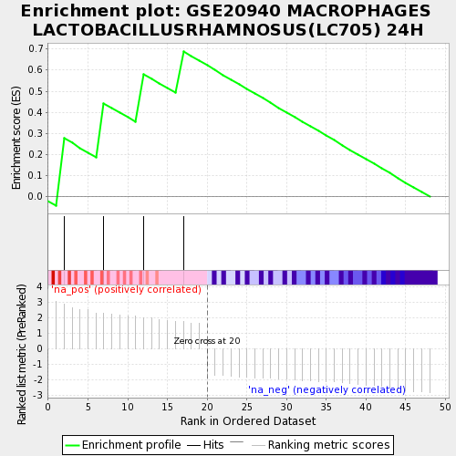

| | | Dataset | testA |
| Phenotype | NoPhenotypeAvailable |
| Upregulated in class | na_pos |
| GeneSet | GSE20940 MACROPHAGES LACTOBACILLUSRHAMNOSUS(LC705) 24H |
| Enrichment Score (ES) | 0.6888889 |
| Normalized Enrichment Score (NES) | 1.6126796 |
| Nominal p-value | 0.036511157 |
| FDR q-value | 1.0 |
| FWER p-Value | 0.994 |
Table: GSEA Results Summary

Fig 1: Enrichment plot: GSE20940 MACROPHAGES LACTOBACILLUSRHAMNOSUS(LC705) 24H
Profile of the Running ES Score & Positions of GeneSet Members on the Rank Ordered List
| PROBE | GENE SYMBOL | GENE_TITLE | RANK IN GENE LIST | RANK METRIC SCORE | RUNNING ES | CORE ENRICHMENT | | 1 | HPS5 | | | 2 | 2.861 | 0.2762 | Yes |
| 2 | RICTOR | | | 7 | 2.282 | 0.4429 | Yes |
| 3 | CLEC4E | | | 12 | 2.023 | 0.5807 | Yes |
| 4 | EOGT | | | 17 | 1.758 | 0.6889 | Yes |
Table: GSEA details [plain text format]
 Fig 2: GSE20940 MACROPHAGES LACTOBACILLUSRHAMNOSUS(LC705) 24H: Random ES distribution
Fig 2: GSE20940 MACROPHAGES LACTOBACILLUSRHAMNOSUS(LC705) 24H: Random ES distribution
Gene set null distribution of ES for GSE20940 MACROPHAGES LACTOBACILLUSRHAMNOSUS(LC705) 24H